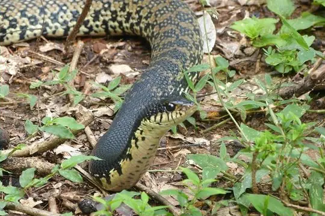
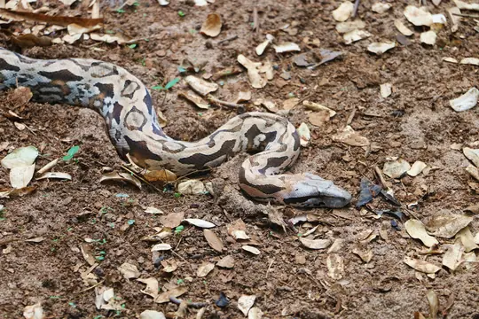
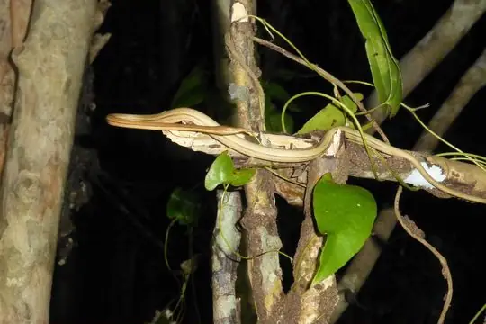
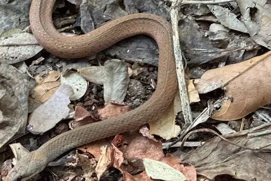

Snakes of Toamasina Region
A region of Madagascar
29 living snake species are recorded in Toamasina Region, a region of Madagascar, in SnakeList's data: none venomous, from 2 families. 34 more are possible: recorded in Madagascar without region detail.
- 29living species
- 29non-venomous
- 2families
- 2found only here
- 34more possible
Toamasina Region is a region of Madagascar. SnakeList records where snakes live by region, not by exact spot, so a species counted here may live in only part of it. The counts are unique living species; fossils, extinct species and introduced snakes are listed apart. SnakeList’s map has 3 areas called Toamasina; they are counted together here. All snakes of Madagascar.
The 29 living species recorded in Toamasina Region
Every living snake species SnakeList records in Toamasina Region. Each is recorded somewhere in the region, not necessarily all over it.
- Bernier's Striped Snake Dromicodryas bernieri
- Betsileo White-banded Tree Snake Parastenophis betsileanus
- Boulenger's Forest Snake Compsophis boulengeri
- Brown Brook Snake Pseudoxyrhopus microps
- Chevron Necked Snake Micropisthodon ochraceus
- Eastern Madagascar Water Snake Thamnosophis epistibes
- Eastern Rainforest Smooth Snake Liopholidophis dolicocercus
- Forest Water Snake Thamnosophis infrasignatus
- Gold-collarcd Snake Liophidium rhodogaster
- Jan's Snake Elapotinus picteti
- Lateral Water Snake Thamnosophis lateralis
- Lined Forest Snake Compsophis infralineatus
- Madagascar Boa Acrantophis madagascariensis
- Madagascar Leaf-nosed Snake Langaha madagascariensis
- Madagascar Night Snake Madagascarophis colubrinus
- Malagasy Giant Hognose Snake Leioheterodon madagascariensis
- Manakara Tree Snake Lycodryas gaimardi
- Night Brook Snake Pseudoxyrhopus heterurus
- Orange Tree Snake Phisalixella variabilis
- Perinet Night Snake Ithycyphus perineti
- Ranomafana Big-headed Snake Compsophis laphystius
- Red-striped Smooth Snake Liophidium pattoni
- Sanzinia Sanzinia madagascariensis
- Six-lined Water Snake Liopholidophis sexlineatus
- Slender Smooth Snake Liopholidophis rhadinaea
- Striped Brook Snake Pseudoxyrhopus quinquelineatus
- Three-striped Ground Snake Pseudoxyrhopus tritaeniatus
- White Banded Tree Snake Phisalixella arctifasciata
- White-lipped Smooth Snake Liophidium torquatum
No snake here matches that.
Possible here: country-level records only
SnakeList records these 34 species in Madagascar without saying in which region, so each may or may not live in Toamasina Region. They are not counted among the species recorded here.
- Anatelo Forest Smooth Snake Liophidium therezieni
- Andasibe Big-headed Snake Compsophis vinckei
- Anjanaharibe Ground Snake Pseudoxyrhopus analabe
- Ankafina Ground Snake Pseudoxyrhopus ankafinaensis
- Ankarana Dwarf Snake Heteroliodon lava
- Antsihanaka Water Snake Liopholidophis varius
- Antsiranana Water Snake Thamnosophis martae
- Bader's Water Snake Liopholidophis baderi
- Boettger's Sand Worm Snake Madatyphlops boettgeri
- Boettger's Worm Snake Madatyphlops mucronatus
- Brahminy Blindsnake Indotyphlops braminus
- Collared Tree Snake Lycodryas guentheri
- Few Scaled Water Snake Liopholidophis oligolepis
- Fianarantsoa Big-headed Snake Compsophis zeny
- Forest Night Snake Ithycyphus goudoti
- Grandidier's Water Snake Liopholidophis grandidieri
- Madagascar Bighead Snake Compsophis albiventris
- Madagascar Black-bellied Smooth Snake Liophidium maintikibo
- Madagascar Worm Snake Madatyphlops madagascariensis
- Mahajanga Big-headed Snake Compsophis fatsibe
- Mandena Ground Snake Pseudoxyrhopus kely
- Marojejy Night Snake Ithycyphus blanci
- Mocquard's Worm Snake Madatyphlops decorsei
- Parker's Worm Snake (ocularis) Madatyphlops ocularis
- Plain Tree Snake Lycodryas inornatus
- Plateau Brook Snake Pseudoxyrhopus imerinae
- Ranomafana Ground Snake Pseudoxyrhopus oblectator
- Reuters Blind Snake Madatyphlops reuteri
- Southern Leafnose Snake Langaha alluaudi
- Stout Dwarf Snake Heteroliodon fohy
- Yellow-throated Water Snake Thamnosophis mavotenda
- Brygophis coulangesi
- Lycodryas carleti
- Phisalixella iarakaensis
No snake here matches that.
Venomous and non-venomous
Venomous: 0 of 29Non-venomous: 29
Snake families
Living species recorded here, by family.
Found only here
Recorded in no other region, country or territory in SnakeList’s data. That may mean they live only here, but it can also mean they have not been recorded elsewhere yet.
- Jan's Snake Elapotinus picteti
- Night Brook Snake Pseudoxyrhopus heterurus
Biggest cities
The biggest cities in Toamasina Region from SnakeList’s city list, biggest first (placed here by their map position). SnakeList has no records for the cities themselves.
Neighbouring regions
Places in SnakeList that share a border with Toamasina Region, with their living species.
- Amoron'i Mania 3 species
- Antananarivo Region 14 species
- Betsiboka 1 species
- Sava 18 species
- Sofia 13 species
- Vatovavy-Fitovinany 17 species
Most recorded worldwide
A global ranking, not a local one. These are the species here with research-grade iNaturalist records in the most places across their whole range (worldwide records). SnakeList has no counts of records within Toamasina Region, so this says nothing about which snakes are commonest here.
 Madagascar Night SnakeMadagascarophis colubrinus
Madagascar Night SnakeMadagascarophis colubrinus
Malagasy Giant Hognose SnakeLeioheterodon madagascariensis Bernier's Striped SnakeDromicodryas bernieri
Bernier's Striped SnakeDromicodryas bernieri SanziniaSanzinia madagascariensis
SanziniaSanzinia madagascariensis Lateral Water SnakeThamnosophis lateralis
Lateral Water SnakeThamnosophis lateralis
Madagascar BoaAcrantophis madagascariensis
Madagascar Leaf-nosed SnakeLangaha madagascariensis
White-lipped Smooth SnakeLiophidium torquatum
Who described them
The scientists who first described the species above, and when.
- Madagascar Night Snake Madagascarophis colubrinus -
- Malagasy Giant Hognose Snake Leioheterodon madagascariensis -
- Bernier's Striped Snake Dromicodryas bernieri -
- Sanzinia Sanzinia madagascariensis -
- Lateral Water Snake Thamnosophis lateralis -
- Madagascar Boa Acrantophis madagascariensis -
- Madagascar Leaf-nosed Snake Langaha madagascariensis -
- White-lipped Smooth Snake Liophidium torquatum -
Names and dates come from SnakeList’s reviewed species accounts; the others are looked up on Wikidata (CC0) when this page opens.